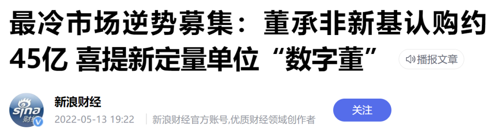
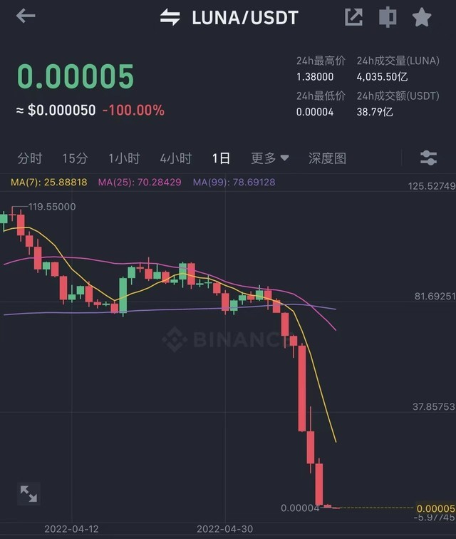

总算轮到他倒霉了
原创 V姐万事屋 V姐来了 2022-05-14 00:05
原文链接(长) 原文链接(短)
Hi，我是V姐。
话说天临四年，五月十三日，知网总算被查了。
天下苦知网久矣。
这个网站作为一个论文收录平台，不但不给版权所有者付费，老教授查看自己的论文都得给它付费。
同时它每年跟科研机构收高额费用，跟大学收高额费用。
最绝的是大学生论文查重业务，一次少则100多，多则300多，你要加急更是1200起步，然后你查重不过修改了，还要再来查一次。
简直赢麻了。
一个大学生给它贡献500，也就是个平均水平。
当年翟天临那句，知网是什么东西？
原来不是问句，是感叹句。
这个时间点，以中科院为首的科研机构率先跟它发难，除了经济原因，也是感知到现在风向变了。我们要发展高科技，海量的钱往里投，大学、基础科研机构这样的产业链上游，不应该在知识获取环节被卡脖子。
不利于科研，不利于提高生产率的障碍都要扫清。
我们不是要搞统一大市场嘛，从科研界搞起，学术垄断的山头先削掉再说。
* * *
这周的市场大A真的走出独立行情，骨头硬了一把，这次咱不跟跌。
纳指和创业板指走出了完全相反的趋势。
国内这波反弹，主要是因为上海疫情明显好转，市场对于很快复工复产是买单的。
以前我们是吃药喝酒行情，现在有朋友开玩笑是买房买车行情。
买房就是大基建和部分地产，买车就是指新能源车。
目前整个新能源产业链还是围绕新能源车来的，上海又是新能源车的核心，上海恢复在即，对于整个长三角上下游产业链通畅，都是重大利好。
最近市场确实有在变暖，我最近听私募路演，大家口气越来越大，从不确定到谨慎乐观，再到喊出现在遍地是黄金，前后不过2个星期。
董承非的首只私募产品本周一开放募集的时候，当天的新闻是大佬新产品遇冷：
一周时间过去，今天结束，变成了最冷市场逆袭。

私募一下子募集45亿，是非常好的成绩。说明市场对于董承非的历史业绩，以及他的均衡配置策略是认可的，加上现在这个时间点，建仓肯定不算贵，趁着大佬盘子还没有很大，超额收益可以期待一下。董承非本人自掏腰包买了4000万，所以现在募资时4000万是“一董”。
销售上来会问你：老板，买几董？
销售群里也很有趣：
刚刚喜提四分之一董！
本行今日斩获8董！
冲啊，我们目标20董！
除了董承非实打实掏钱入场，明星基金经理丘栋荣这周二做了一场路演。
他的基金最近1年收益35%，7年平均年化收益29.58%。今年这个行情下，还是正收益，着实厉害。他本人在路演里提到了5个投资机会：
- 传统能源
- 国内互联网
- 小市值公司
- 银行和地产
- 港股
除此之外，他也提示了3大风险，分别是：
1、高估值风险: 大盘成长还不够便宜，差不多就是指茅20为代表的大白马吧。
2、基本面节构风险：也就是下行周期里，影响盈利基本面的行业，他个人不看好今年的宁指数。
3、商业模式风险：比如创新药这种高投入、高不确定性的模式，他不碰。
同时他很乐观，讲说现金是不可能留的，全部打出去，全部换成股票。同时他认为现在权益资产进入完美的不可能三角，也就是 **风险小、价格低和流动性好兼具**。
通常来说，一个投资标的，很难兼具上面三点。
比如股票，通常来说，流动性好，风险高。
大部分房子，风险相对小，但是流动性差。
一线稀缺豪宅，风险小，流动性好，但是价格高。
总之呢，不少基金经理都对现在的市场比较乐观了。
我大A虽然骗过大家很多次，但是总体来说，最多算个渣男。
虚拟币市场这两天真就是屠宰场了，不但要钱，还要命的那种。
加密货币第三大稳定币UST旗下的Luna货币，一天跌幅100%。

跟币圈比起来，其他市场都不能叫熊市，俄罗斯股市都没见过这种跌法。
很多朋友问我对于虚拟币的看法，老实说，我认为绝大多数是击鼓传花的游戏。
这次除了Luna，在币圈以国债著称，号称稳定币，且与美元挂钩的UST，也跌了60%。
美联储放出加息声音，这些因为疯狂放水而膨胀的无价值资产，率先现出原形。
我不认为加密货币是避险资产，相反，很有可能有事它先跌。你想一下，加密货币本来就是相对法币存在的币种，现在背后都要挂钩美元，你说它避险，这没法闭环了呀。
我看到网上有人讲可以反手做空啊，加20倍杠杆，秒赚1000万啥的。我真的，朋友们，你要这么说，就好比泰森一拳过来，你说这还不简单，往左这么一躲，再往右这么一勾，赢了呀。
佩服佩服，好好的路不走，钢丝上翻跟头。普通朋友还是谨慎一点，买点看得懂的东西，至少不会一觉醒来，账户归0了。